#Beer Data
beers = read.csv("/Users/19785/OneDrive/Documents/SMU Data Science/DS 6306/Test Website1/Simple Website/Beers.csv")
#Brewery Data
breweries = read.csv("/Users/19785/OneDrive/Documents/SMU Data Science/DS 6306/Test Website1/Simple Website/Breweries.csv")
# Budweiser Logo=
img = "/Users/19785/OneDrive/Documents/SMU Data Science/DS 6306/Test Website1/Simple Website/bud_logo copy 2.jpeg"
img2 = "/Users/19785/OneDrive/Documents/SMU Data Science/DS 6306/Test Website1/Simple Website/bud_logo copy 2.jpeg"# How many breweries?
state_data = breweries %>%
group_by(State) %>%
summarize(Count = n()) %>%
arrange(Count)
#Plot
p = state_data %>%
ggplot(aes(x = reorder(State,Count), y = Count)) +
geom_bar(stat = "identity",
fill = "dodgerblue4",
alpha = 0.95) +
theme(axis.text.x = element_text(angle = 90,
vjust = 0.5,
hjust = 1,
size = 8)) +
theme(panel.grid.major = element_blank(),
panel.grid.minor = element_blank()) +
ggtitle("Breweries per State") +
theme(plot.title = element_text(size = 20, face = "bold")) +
theme(axis.text=element_text(size = 10),
axis.title=element_text(size=12,face="bold")) +
xlab("US States") +
ylab("Number of Breweries") +
geom_text(aes(label = Count, vjust = -0.75), size = 2.5, color = "black")
ggbackground(p, img)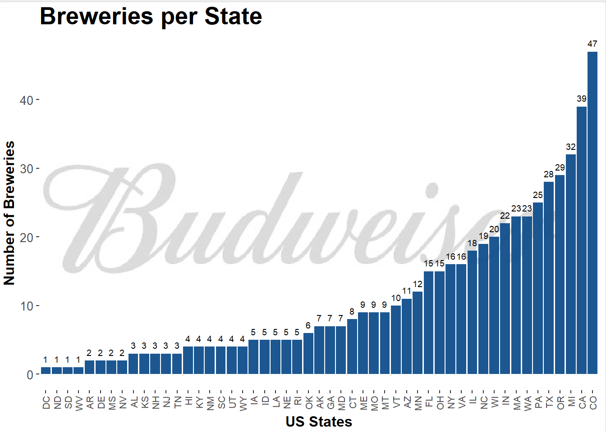
#Create Key
colnames(beers)[5] = "Brew_ID"
#Join data on key
beer_data = inner_join(breweries, beers, by = "Brew_ID")
#Rename column names and make brewery a factor
colnames(beer_data) = c("Brew_ID", "Brewery", "City", "State", "Beer", "Beer_ID", "ABV", "IBU", "Style", "Ounces")
beer_data$Brewery = factor(beer_data$Brewery)
#Print first and last 6 rows
head(beer_data, n = 6)## Brew_ID Brewery City State Beer Beer_ID ABV IBU Style Ounces
## 1 1 NorthGate Brewing Minneapolis MN Get Together 2692 0.045 50 American IPA 16
## 2 1 NorthGate Brewing Minneapolis MN Maggie's Leap 2691 0.049 26 Milk / Sweet Stout 16
## 3 1 NorthGate Brewing Minneapolis MN Wall's End 2690 0.048 19 English Brown Ale 16
## 4 1 NorthGate Brewing Minneapolis MN Pumpion 2689 0.060 38 Pumpkin Ale 16
## 5 1 NorthGate Brewing Minneapolis MN Stronghold 2688 0.060 25 American Porter 16
## 6 1 NorthGate Brewing Minneapolis MN Parapet ESB 2687 0.056 47 Extra Special / Strong Bitter (ESB) 16tail(beer_data, n = 6)## Brew_ID Brewery City State Beer Beer_ID ABV IBU Style Ounces
## 2405 556 Ukiah Brewing Company Ukiah CA Pilsner Ukiah 98 0.055 NA German Pilsener 12
## 2406 557 Butternuts Beer and Ale Garrattsville NY Heinnieweisse Weissebier 52 0.049 NA Hefeweizen 12
## 2407 557 Butternuts Beer and Ale Garrattsville NY Snapperhead IPA 51 0.068 NA American IPA 12
## 2408 557 Butternuts Beer and Ale Garrattsville NY Moo Thunder Stout 50 0.049 NA Milk / Sweet Stout 12
## 2409 557 Butternuts Beer and Ale Garrattsville NY Porkslap Pale Ale 49 0.043 NA American Pale Ale (APA) 12
## 2410 558 Sleeping Lady Brewing Company Anchorage AK Urban Wilderness Pale Ale 30 0.049 NA English Pale Ale 12#Find missing items
gg_miss_var(beer_data) ## Warning: It is deprecated to specify `guide = FALSE` to remove a guide. Please use `guide = "none"` instead.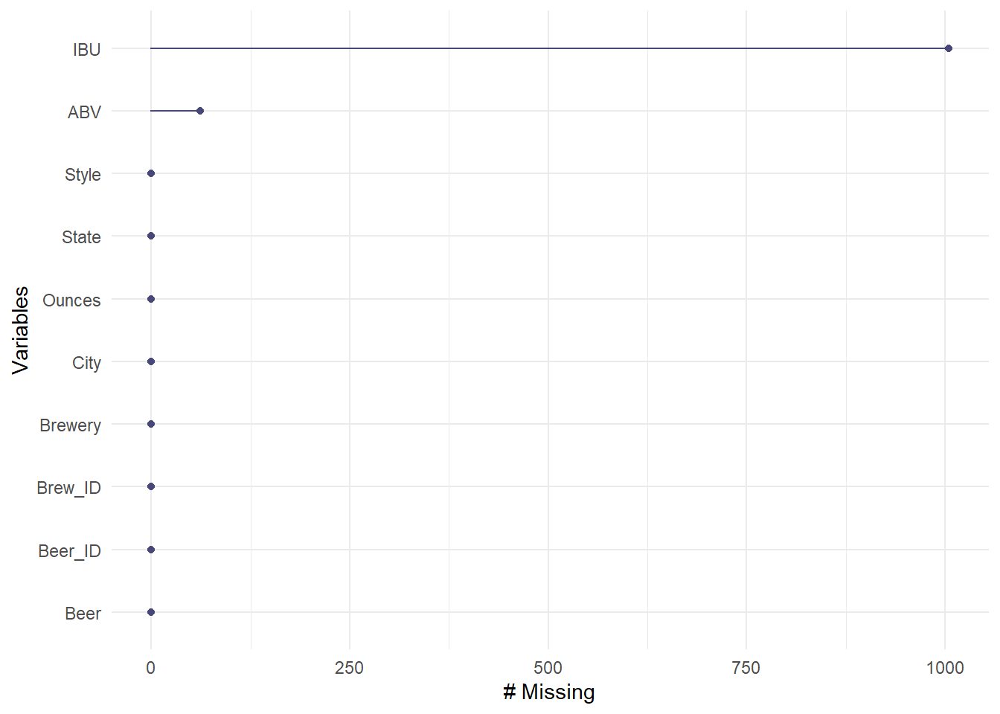
#A large portion of beers do not have IBU listed, so we will create a separate data set for IBU and ABV comparisons
full_beer_data = beer_data
beer_data = beer_data %>%
filter(!is.na(IBU) & !is.na(ABV))
gg_miss_var(beer_data)## Warning: It is deprecated to specify `guide = FALSE` to remove a guide. Please use `guide = "none"` instead.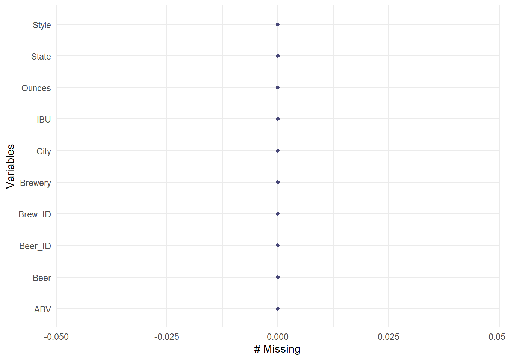
med_chart = beer_data %>%
group_by(State) %>%
summarize("Median_ABV" = median(ABV),
"Median_IBU" = median(IBU))
med_chart## # A tibble: 50 x 3
## State Median_ABV Median_IBU
## <chr> <dbl> <dbl>
## 1 AK 0.057 46
## 2 AL 0.06 43
## 3 AR 0.04 39
## 4 AZ 0.0575 20.5
## 5 CA 0.058 42
## 6 CO 0.065 40
## 7 CT 0.061 29
## 8 DC 0.059 47.5
## 9 DE 0.055 52
## 10 FL 0.062 55
## # ... with 40 more rowsp_abv = med_chart %>%
ggplot(aes(x = reorder(State,Median_ABV), y = Median_ABV)) +
geom_bar(stat = "identity",
fill = "dodgerblue4",
color = "dodgerblue4",
alpha = 0.95,
width = .75) +
theme(axis.text.x = element_text(angle = 90,
vjust = 0.5,
hjust = 1)) +
theme(panel.grid.major = element_blank(),
panel.grid.minor = element_blank()) +
#ggtitle("Median ABV by State") +
theme(plot.title = element_text(size = 20, face = "bold")) +
theme(axis.text=element_text(size = 10),
axis.title=element_text(size=12,face="bold")) +
xlab("State") +
ylab("ABV") +
coord_cartesian(ylim=c(0.04,0.075))
ggbackground(p_abv, img)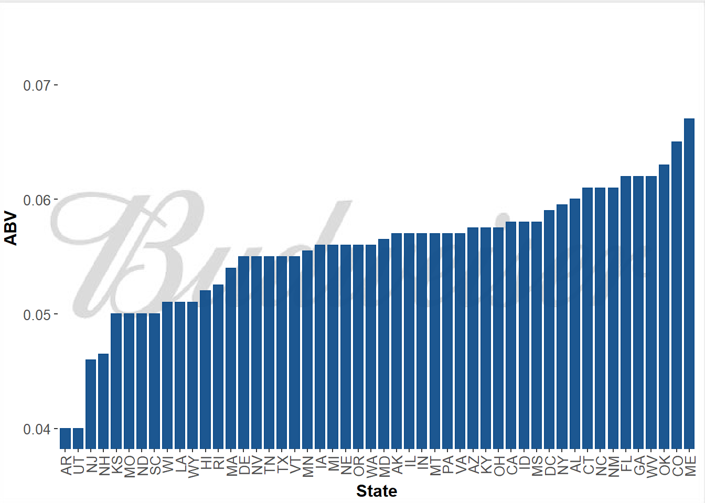
p_abv = med_chart %>%
ggplot(aes(x = reorder(State,Median_IBU), y = Median_IBU)) +
geom_bar(stat = "identity",
fill = "dodgerblue4",
color = "dodgerblue4",
alpha = 0.95,
width = .75) +
theme(axis.text.x = element_text(angle = 90,
vjust = 0.5,
hjust = 1)) +
theme(panel.grid.major = element_blank(),
panel.grid.minor = element_blank()) +
#ggtitle("Median IBU by State") +
theme(plot.title = element_text(size = 20, face = "bold")) +
theme(axis.text=element_text(size = 10),
axis.title=element_text(size=12,face="bold")) +
xlab("State") +
ylab("IBU") +
coord_cartesian(ylim=c(20,60))
ggbackground(p_abv, img)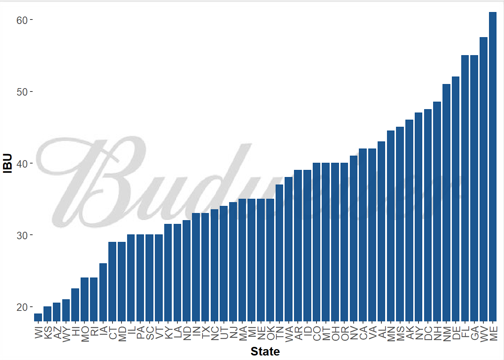
max_chart = beer_data %>%
group_by(State) %>%
summarize("Max_ABV" = max(ABV),
"Max_IBU" = max(IBU))
#Max ABV
max_chart[which.max(max_chart$Max_ABV),]## # A tibble: 1 x 3
## State Max_ABV Max_IBU
## <chr> <dbl> <int>
## 1 KY 0.125 80#Max IBU
max_chart[which.max(max_chart$Max_IBU),]## # A tibble: 1 x 3
## State Max_ABV Max_IBU
## <chr> <dbl> <int>
## 1 OR 0.085 138p = max_chart %>%
ggplot(aes(x = Max_IBU, y = Max_ABV, color = State)) +
geom_point() +
coord_cartesian(ylim=c(0.04,.13)) +
ggtitle("Max IBU and ABV by State") +
xlab("Max ABV") +
ylab("Max IBU")
ggplotly(p)summary(beer_data$ABV)## Min. 1st Qu. Median Mean 3rd Qu. Max.
## 0.02700 0.05000 0.05700 0.05991 0.06800 0.12500p_abv = beer_data %>%
ggplot(aes(x = ABV)) +
geom_histogram(stat = "count",
fill = "dodgerblue4",
color = "dodgerblue4",
alpha = 0.95) +
theme(panel.grid.major = element_blank(),
panel.grid.minor = element_blank()) +
ggtitle("ABV Distribution") +
theme(plot.title = element_text(size = 20, face = "bold")) +
theme(axis.text=element_text(size = 10),
axis.title=element_text(size=12,face="bold")) +
xlab("ABV") +
ylab("Count")## Warning: Ignoring unknown parameters: binwidth, bins, padggbackground(p_abv, img)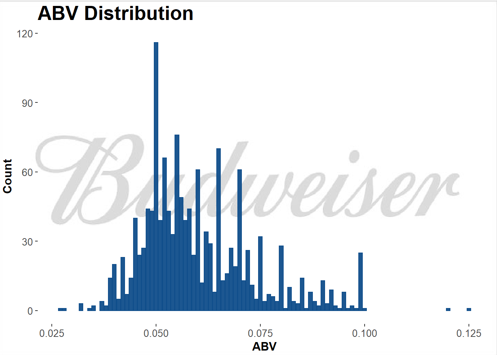
p_abv = beer_data %>%
ggplot(aes(x = ABV)) +
geom_boxplot(fill = "dodgerblue4",
color = "dodgerblue4",
alpha = 0.95) +
theme(panel.grid.major = element_blank(),
panel.grid.minor = element_blank()) +
ggtitle("ABV Distribution") +
theme(plot.title = element_text(size = 20, face = "bold")) +
theme(axis.text=element_text(size = 10),
axis.title=element_text(size=12,face="bold")) +
xlab("ABV") +
ylab("Count")
ggbackground(p_abv, img)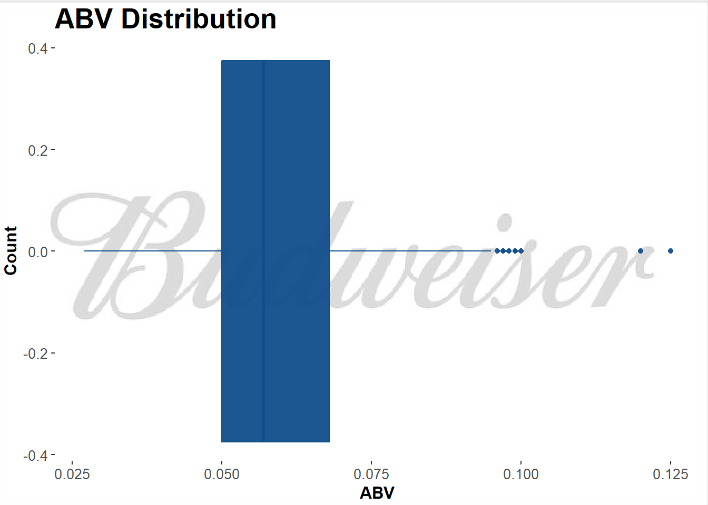
The distribution of ABV is right skewed with a mean of 0.05991 and a median of 0.057.
50% of the data is nested between the values .05 and .068
p = beer_data %>%
ggplot(aes(x = IBU, y = ABV)) +
geom_point(position = "jitter",
color = "dodgerblue4",
color = "dodgerblue4",
alpha = 0.95) +
geom_smooth(method = lm, color = "darkgoldenrod1") +
theme(panel.grid.major = element_blank(),
panel.grid.minor = element_blank()) +
ggtitle("IBU vs ABV") +
theme(plot.title = element_text(size = 20, face = "bold")) +
theme(axis.text=element_text(size = 10),
axis.title=element_text(size=12,face="bold")) +
xlab("IBU") +
ylab("ABV")## Warning: Duplicated aesthetics after name standardisation: colourggbackground(p, img)## `geom_smooth()` using formula 'y ~ x'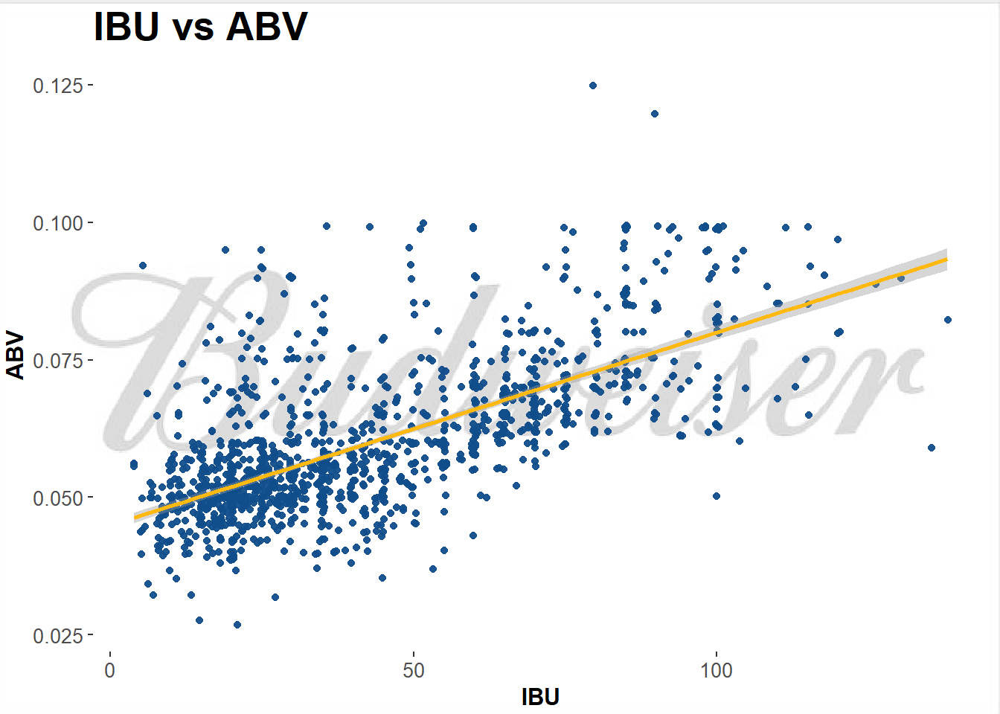
There appears to be a positive correlation between bitterness (IBU) and alcohol content (ABV).
In general, as IBU increases, we also see an increase in ABV. This can be seen with higher clarity with the included linear model regression line
ales = beer_data %>%
mutate(Ale = case_when(
grepl("IPA",Style)|grepl("India Pale",Style) ~ "IPA",
!grepl("IPA",Style)&grepl("Ale",Style) ~ "Ale")) %>%
filter(!is.na(Ale))splitPerc = 0.75
trainInices = sample(1:dim(ales)[1], round(splitPerc * dim(ales)[1]))
train = ales[trainInices,]
test = ales[-trainInices,]
p_ale = ales %>%
ggplot(aes(x = IBU, y = ABV, color = Ale)) +
geom_point(position = "jitter") +
ggtitle("Ales - IBU vs ABV") +
theme(plot.title = element_text(size = 20, face = "bold")) +
theme(axis.text=element_text(size = 10),
axis.title=element_text(size=12,face="bold")) +
theme(panel.grid.major = element_blank(),
panel.grid.minor = element_blank())
ggbackground(p_ale, img2)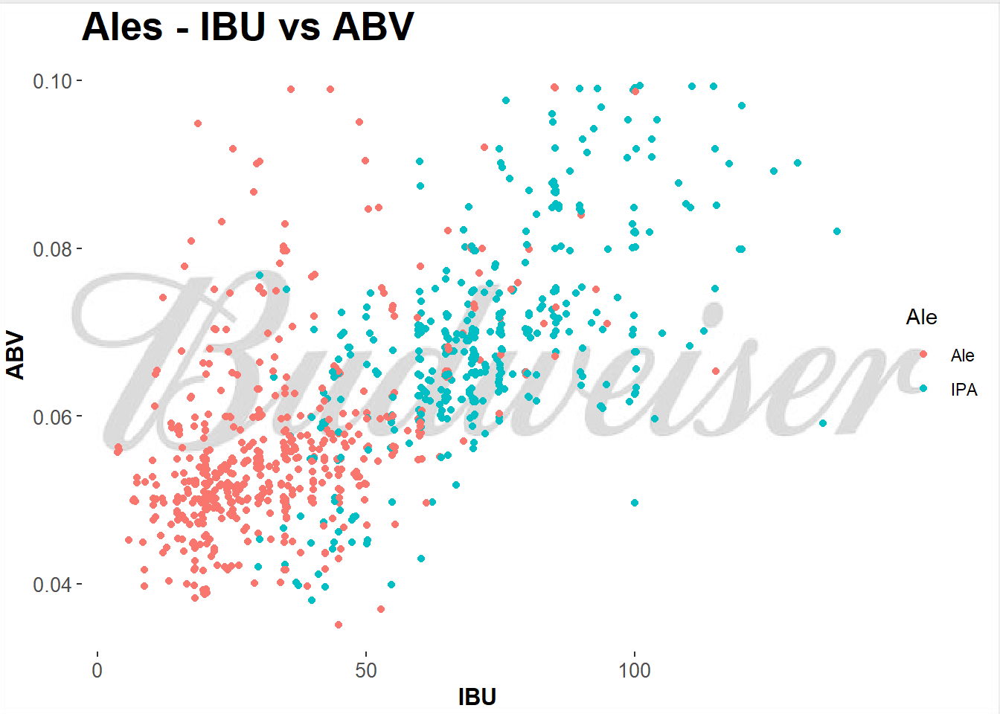
# K = 3
classifications = knn(train[,c(7,8)], test[,c(7,8)], train$Ale, prob = TRUE, k = 3)
table(classifications, test$Ale)##
## classifications Ale IPA
## Ale 133 15
## IPA 21 68confusionMatrix(table(classifications,test$Ale))## Confusion Matrix and Statistics
##
##
## classifications Ale IPA
## Ale 133 15
## IPA 21 68
##
## Accuracy : 0.8481
## 95% CI : (0.796, 0.8913)
## No Information Rate : 0.6498
## P-Value [Acc > NIR] : 6.883e-12
##
## Kappa : 0.6717
##
## Mcnemar's Test P-Value : 0.4047
##
## Sensitivity : 0.8636
## Specificity : 0.8193
## Pos Pred Value : 0.8986
## Neg Pred Value : 0.7640
## Prevalence : 0.6498
## Detection Rate : 0.5612
## Detection Prevalence : 0.6245
## Balanced Accuracy : 0.8415
##
## 'Positive' Class : Ale
## ale_scaled = data.frame(ZABV = scale(ales$ABV), ZIBU = scale(ales$IBU), Ale = ales$Ale)iterations = 1000
numks = 100
masterAcc = matrix(nrow = iterations, ncol = numks)
for(j in 1:iterations)
{
accs = data.frame(accuracy = numeric(numks), k = numeric(numks))
trainIndices = sample(1:dim(ale_scaled)[1],round(splitPerc * dim(ale_scaled)[1]))
train = ale_scaled[trainIndices,]
test = ale_scaled[-trainIndices,]
for(i in 1:numks)
{
classifications = knn(train[,c(1,2)],test[,c(1,2)],train$Ale, prob = TRUE, k = i)
table(classifications,test$Ale)
CM = confusionMatrix(table(classifications,test$Ale))
masterAcc[j,i] = CM$overall[1]
}
}
MeanAcc = colMeans(masterAcc)
plot(seq(1,numks,1),MeanAcc, type = "l")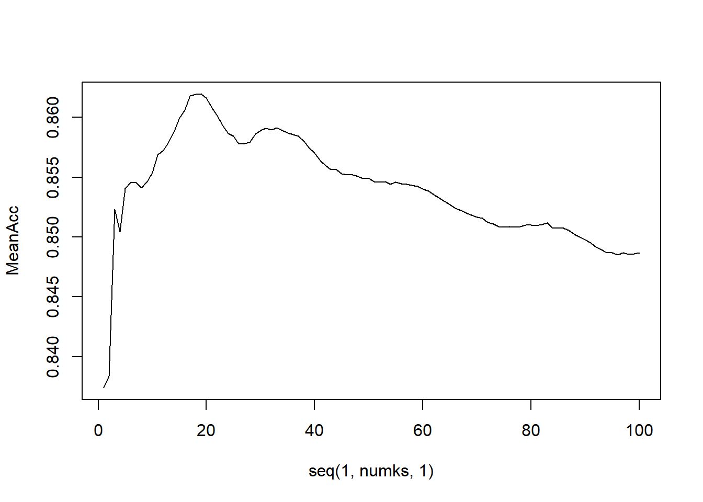
ale_scaled = data.frame(ZABV = scale(ales$ABV), ZIBU = scale(ales$IBU), Ale = ales$Ale)
splitPerc = 0.70
trainInices = sample(1:dim(ale_scaled)[1], round(splitPerc * dim(ale_scaled)[1]))
train = ale_scaled[trainInices,]
test = ale_scaled[-trainInices,]
# K = 20
classifications = knn(train[,c(1,2)], test[,c(1,2)], train$Ale, prob = TRUE, k = 20)
table(classifications, test$Ale)##
## classifications Ale IPA
## Ale 156 21
## IPA 15 92confusionMatrix(table(classifications,test$Ale))## Confusion Matrix and Statistics
##
##
## classifications Ale IPA
## Ale 156 21
## IPA 15 92
##
## Accuracy : 0.8732
## 95% CI : (0.8289, 0.9096)
## No Information Rate : 0.6021
## P-Value [Acc > NIR] : <2e-16
##
## Kappa : 0.733
##
## Mcnemar's Test P-Value : 0.4047
##
## Sensitivity : 0.9123
## Specificity : 0.8142
## Pos Pred Value : 0.8814
## Neg Pred Value : 0.8598
## Prevalence : 0.6021
## Detection Rate : 0.5493
## Detection Prevalence : 0.6232
## Balanced Accuracy : 0.8632
##
## 'Positive' Class : Ale
## #Random Data Set
set.seed(13)
ABV_min = 0.027 * 1000
ABV_max = 0.125 * 1000
IBU_min = 4
IBU_max = 138
ABV = c(sample(ABV_min : ABV_max, 10000, rep=TRUE))
ABV = ABV/1000
IBU = c(sample(IBU_min : IBU_max, 10000, rep=TRUE))
IBU = IBU
random_beer = data.frame(cbind(ABV, IBU))
random_beer$ABV = scale(random_beer$ABV)
random_beer$IBU = scale(random_beer$IBU)classifications = knn(ale_scaled[,c(1,2)], random_beer[,c(1,2)], ale_scaled$Ale, k = 20)
ABV_class = data.frame(table(random_beer$ABV,classifications))
colnames(ABV_class) = c("ABV", "Classification", "Freq")
IBU_class = data.frame(table(random_beer$IBU,classifications))
colnames(IBU_class) = c("IBU", "Classification", "Freq")
#Illustrate distribution of predictions
ABV_class$ABV = as.numeric(as.matrix(ABV_class)[,1])
p_abv = ABV_class %>%
ggplot(aes(x = ABV, y = Freq, fill = Classification)) +
stat_smooth(geom = "area", method = "loess", span = .7, alpha = .5) +
ggtitle("ABV Classification Distribution") +
xlim(-1.2,1.2) +
theme(plot.title = element_text(size = 20, face = "bold")) +
theme(axis.text=element_text(size = 10),
axis.title=element_text(size=12,face="bold")) +
theme(panel.grid.major = element_blank(),
panel.grid.minor = element_blank())
ggbackground(p_abv, img2)## `geom_smooth()` using formula 'y ~ x'## Warning: Removed 62 rows containing non-finite values (stat_smooth).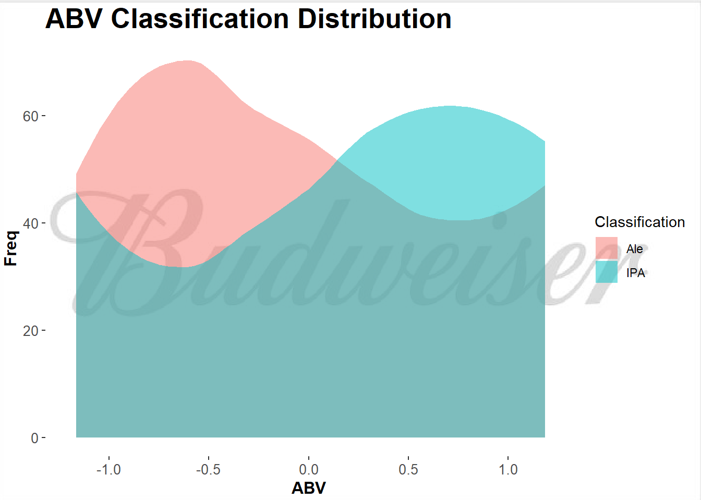
IBU_class$IBU = as.numeric(as.matrix(IBU_class)[,1])
p_ibu = IBU_class %>%
ggplot(aes(x = IBU, y = Freq, fill = Classification)) +
stat_smooth(geom = "area", method = "loess", span = .7, alpha = .5) +
ylim(0,80) +
xlim(-1,1) +
ggtitle("IBU Classification Distribution") +
theme(plot.title = element_text(size = 20, face = "bold")) +
theme(axis.text=element_text(size = 10),
axis.title=element_text(size=12,face="bold")) +
theme(panel.grid.major = element_blank(),
panel.grid.minor = element_blank())
ggbackground(p_ibu, img2)## `geom_smooth()` using formula 'y ~ x'## Warning: Removed 120 rows containing non-finite values (stat_smooth).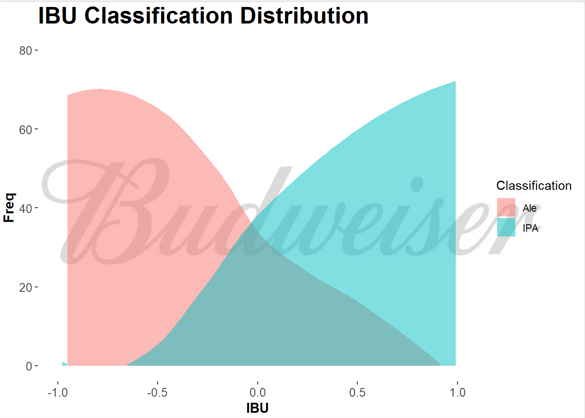
#Normality
p = ales %>%
ggplot(aes(x = IBU, fill = Ale)) +
geom_histogram(bins = 20) +
facet_wrap(~Ale) +
theme(panel.grid.major = element_blank(),
panel.grid.minor = element_blank()) +
ggtitle("Testing for IBU Normality")
ggbackground(p, img)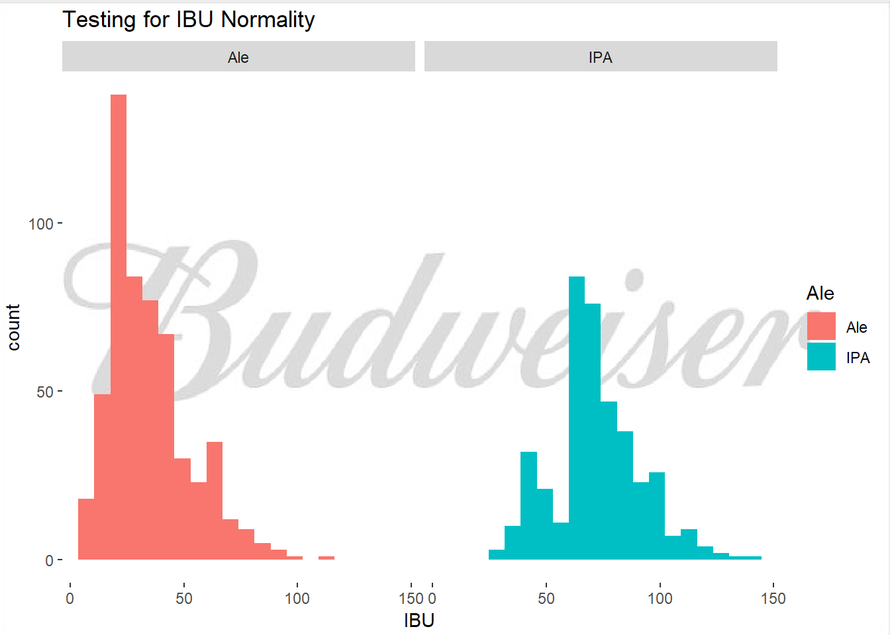
p = ales %>%
ggplot(aes(x = ABV, fill = Ale)) +
geom_histogram(bins = 20) +
facet_wrap(~Ale) +
theme(panel.grid.major = element_blank(),
panel.grid.minor = element_blank()) +
ggtitle("Testing for ABV Normality")
ggbackground(p, img)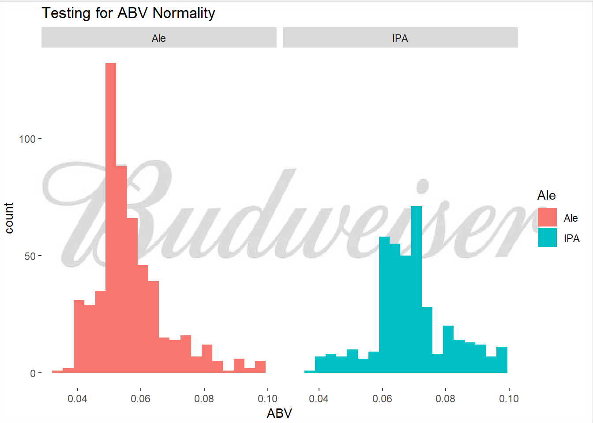
# Equal Variance
p = ales %>%
ggplot(aes(x = IBU, fill = Ale)) +
geom_boxplot() +
theme(panel.grid.major = element_blank(),
panel.grid.minor = element_blank()) +
ggtitle("Testing for IBU Variance")
ggbackground(p, img)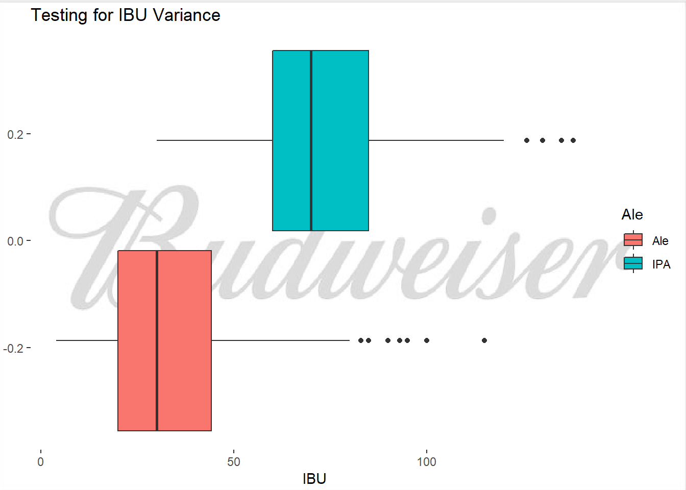
p = ales %>%
ggplot(aes(x = ABV, fill = Ale)) +
geom_boxplot() +
theme(panel.grid.major = element_blank(),
panel.grid.minor = element_blank()) +
ggtitle("Testing for ABV Variance")
ggbackground(p, img)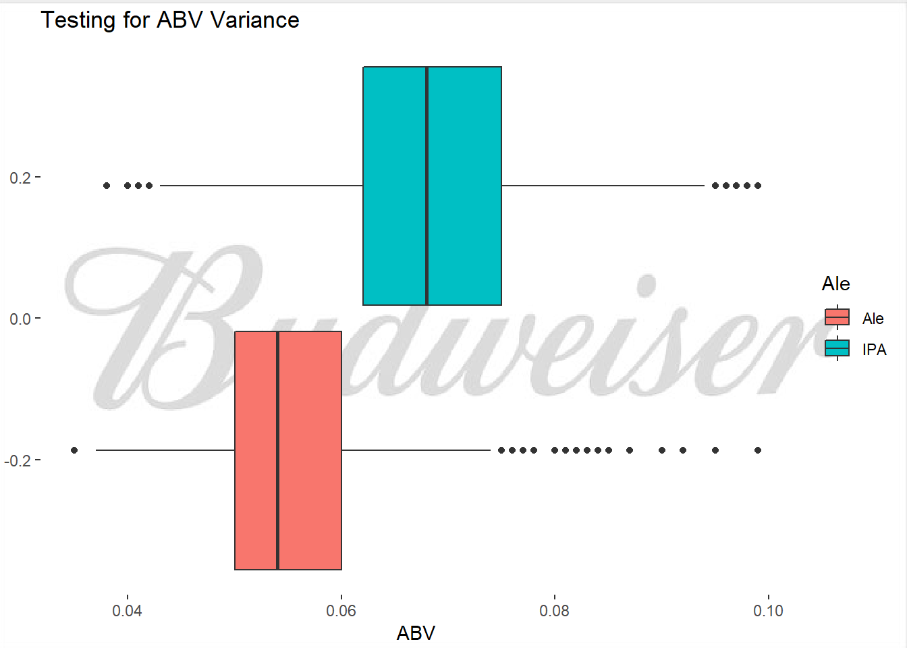
Distributions are both right skewed, but fairly normal
Variance is not identical, but not drastically different
Independence may be assumed
We will continue with a Welch’s t-Test
t.test( x = ales %>%
filter(Ale == "IPA") %>%
select(ABV),
y = ales %>%
filter(Ale == "Ale") %>%
select(ABV),
alternative = "two.sided",
var.equal = FALSE,
conf.level = 0.95)##
## Welch Two Sample t-test
##
## data: ales %>% filter(Ale == "IPA") %>% select(ABV) and ales %>% filter(Ale == "Ale") %>% select(ABV)
## t = 16.207, df = 801.73, p-value < 2.2e-16
## alternative hypothesis: true difference in means is not equal to 0
## 95 percent confidence interval:
## 0.01101906 0.01405596
## sample estimates:
## mean of x mean of y
## 0.06909367 0.05655616t.test( x = ales %>%
filter(Ale == "IPA") %>%
select(IBU),
y = ales %>%
filter(Ale == "Ale") %>%
select(IBU),
alternative = "two.sided",
var.equal = FALSE,
conf.level = 0.95)##
## Welch Two Sample t-test
##
## data: ales %>% filter(Ale == "IPA") %>% select(IBU) and ales %>% filter(Ale == "Ale") %>% select(IBU)
## t = 30.156, df = 805.05, p-value < 2.2e-16
## alternative hypothesis: true difference in means is not equal to 0
## 95 percent confidence interval:
## 35.10601 39.99441
## sample estimates:
## mean of x mean of y
## 71.88354 34.33333IPA = full_beer_data %>%
mutate(IPA_Count = case_when(
grepl("IPA",Style)|grepl("India Pale",Style) ~ 1,
!grepl("IPA",Style)&!grepl("India Pale",Style) ~ 0))state_data = statepop %>%
select(fips, abbr, full) %>%
arrange(abbr)
statebrew = IPA %>%
select(State, Brewery, IPA_Count) %>%
group_by(State) %>%
summarize(Breweries = sum(IPA_Count)) %>%
arrange(State)
beermap = cbind(statebrew, state_data) %>%
select(fips, State, Breweries, full)Cbus = tibble(
long = c(-82.9988),
lat = c(39.9612),
names = c("Columbus"))
Cbus = usmap_transform(Cbus)## Warning in showSRID(uprojargs, format = "PROJ", multiline = "NO", prefer_proj = prefer_proj): Discarded datum unknown in Proj4 definitionBville = tibble(
long = c(-76.3327),
lat = c(43.1587),
names = c("Baldwinsville"))
Bville = usmap_transform(Bville)## Warning in showSRID(uprojargs, format = "PROJ", multiline = "NO", prefer_proj = prefer_proj): Discarded datum unknown in Proj4 definitionCville = tibble(
long = c(-84.7999),
lat = c(34.1651),
names = c("Cartersville"))
Cville = usmap_transform(Cville)## Warning in showSRID(uprojargs, format = "PROJ", multiline = "NO", prefer_proj = prefer_proj): Discarded datum unknown in Proj4 definitionLA = tibble(
long = c(-118.2437),
lat = c(34.0522),
names = c("Los Angeles"))
LA = usmap_transform(LA)## Warning in showSRID(uprojargs, format = "PROJ", multiline = "NO", prefer_proj = prefer_proj): Discarded datum unknown in Proj4 definitionNewark = tibble(
long = c(-74.1724),
lat = c(40.7357),
names = c("Newark"))
Newark = usmap_transform(Newark)## Warning in showSRID(uprojargs, format = "PROJ", multiline = "NO", prefer_proj = prefer_proj): Discarded datum unknown in Proj4 definitionWburg = tibble(
long = c(-76.7075),
lat = c(37.2707),
names = c("Williamsburg"))
Wburg = usmap_transform(Wburg)## Warning in showSRID(uprojargs, format = "PROJ", multiline = "NO", prefer_proj = prefer_proj): Discarded datum unknown in Proj4 definitionFfield = tibble(
long = c(-122.0405),
lat = c(38.2492),
names = c("Fairfield"))
Ffield = usmap_transform(Ffield)## Warning in showSRID(uprojargs, format = "PROJ", multiline = "NO", prefer_proj = prefer_proj): Discarded datum unknown in Proj4 definitionFCol = tibble(
long = c(-105.0844),
lat = c(40.5853),
names = c("Fort Collins"))
FCol = usmap_transform(FCol)## Warning in showSRID(uprojargs, format = "PROJ", multiline = "NO", prefer_proj = prefer_proj): Discarded datum unknown in Proj4 definitionHouston = tibble(
long = c(-95.3698),
lat = c(29.7604),
names = c("Houston"))
Houston = usmap_transform(Houston)## Warning in showSRID(uprojargs, format = "PROJ", multiline = "NO", prefer_proj = prefer_proj): Discarded datum unknown in Proj4 definitionJville = tibble(
long = c(-81.6557),
lat = c(30.3322),
names = c("Jacksonville"))
Jville = usmap_transform(Jville)## Warning in showSRID(uprojargs, format = "PROJ", multiline = "NO", prefer_proj = prefer_proj): Discarded datum unknown in Proj4 definitionMrry = tibble(
long = c(-71.4948),
lat = c(42.8679),
names = c("Jacksonville"))
Mrry = usmap_transform(Mrry)## Warning in showSRID(uprojargs, format = "PROJ", multiline = "NO", prefer_proj = prefer_proj): Discarded datum unknown in Proj4 definitionStlouis = tibble(
long = c(-90.1994),
lat = c(38.6270),
names = c("Jacksonville"))
Stlouis = usmap_transform(Stlouis)## Warning in showSRID(uprojargs, format = "PROJ", multiline = "NO", prefer_proj = prefer_proj): Discarded datum unknown in Proj4 definitionplot_usmap(data = beermap, values = "Breweries", color = "tan3") +
scale_fill_continuous(
low = "white", high = "darkolivegreen4", name = "Breweries", label = scales::comma) +
theme(legend.position = "right") +
labs(title = "IPA Brewers by State") +
theme(panel.background = element_rect(color = "gray", fill = "lightsteelblue3")) +
theme(plot.title = element_text(size = 20, face = "bold")) +
geom_point(data = Cbus, aes(x = long.1, y = lat.1), shape = 21, color = "black", fill = "firebrick2", size = 3) +
geom_point(data = Bville, aes(x = long.1, y = lat.1), shape = 21, color = "black", fill = "firebrick2", size = 3) +
geom_point(data = Cville, aes(x = long.1, y = lat.1), shape = 21, color = "black", fill = "firebrick2", size = 3) +
geom_point(data = LA, aes(x = long.1, y = lat.1), shape = 21, color = "black", fill = "firebrick2", size = 3) +
geom_point(data = Newark, aes(x = long.1, y = lat.1), shape = 21, color = "black", fill = "firebrick2", size = 3) +
geom_point(data = Wburg, aes(x = long.1, y = lat.1), shape = 21, color = "black", fill = "firebrick2", size = 3) +
geom_point(data = Ffield, aes(x = long.1, y = lat.1), shape = 21, color = "black", fill = "firebrick2", size = 3) +
geom_point(data = FCol, aes(x = long.1, y = lat.1), shape = 21, color = "black", fill = "firebrick2", size = 3) +
geom_point(data = Houston, aes(x = long.1, y = lat.1), shape = 21, color = "black", fill = "firebrick2", size = 3) +
geom_point(data = Jville, aes(x = long.1, y = lat.1), shape = 21, color = "black", fill = "firebrick2", size = 3) +
geom_point(data = Mrry, aes(x = long.1, y = lat.1), shape = 21, color = "black", fill = "firebrick2", size = 3) +
geom_point(data = Stlouis, aes(x = long.1, y = lat.1), shape = 21, color = "black", fill = "firebrick2", size = 3)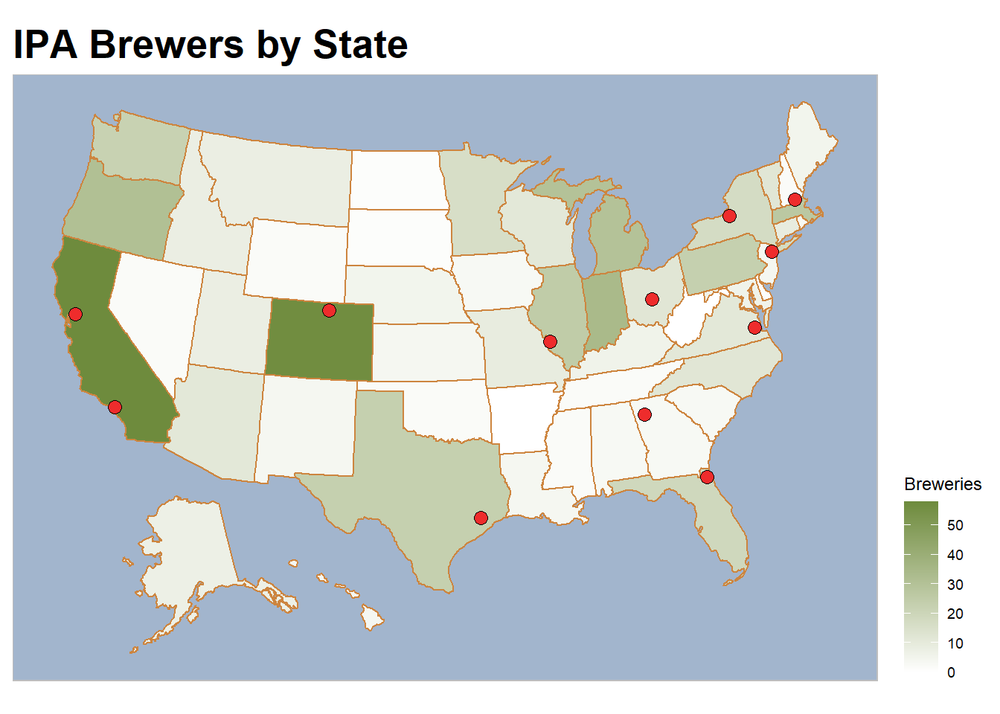
Markets in California and Colorado locations appear oversaturated - it may not make sense to introduce a new Budweiser IPA into these brewing locations
The Texas, Midwest, New England, and Virginia locations all have moderate counts of IPA breweries in the area. This may indicate interest in IPAs by the local populace, and it may be worth investigating further to see if it makes sense to introduce a Budweiser IPA.
The Georgia and Florida Budweiser Breweries are in an area where wither there are almost no IPA breweries, or they are adjacent to this market. It would be worth investigating demand for IPAs in this area. If it exists, it would be strongly recommended to introduce a new Budweiser IPA into these locations to take advantage of this opportunity.
plot_usmap(include = .south_region, data = beermap, values = "Breweries", color = "tan3") +
scale_fill_continuous(
low = "white", high = "darkolivegreen4", name = "Breweries", label = scales::comma) +
theme(legend.position = "right") +
labs(title = "IPA Brewers: Southeastern States") +
theme(panel.background = element_rect(color = "gray", fill = "lightsteelblue3")) +
theme(plot.title = element_text(size = 20, face = "bold")) +
geom_point(data = Cville, aes(x = long.1, y = lat.1), shape = 21, color = "black", fill = "firebrick2", size = 3) +
geom_text(data = Cville, aes(x = long.1, y = lat.1, label = names), hjust = 0.5, vjust = 1.5, nudge_x = 4, color = "black") +
geom_point(data = Wburg, aes(x = long.1, y = lat.1), shape = 21, color = "black", fill = "firebrick2", size = 3) +
geom_text(data = Wburg, aes(x = long.1, y = lat.1, label = names), hjust = 0.5, vjust = 1.5, nudge_x = 4, color = "black") +
geom_point(data = Houston, aes(x = long.1, y = lat.1), shape = 21, color = "black", fill = "firebrick2", size = 3) +
geom_text(data = Houston, aes(x = long.1, y = lat.1, label = names), hjust = 0.5, vjust = 1.5, nudge_x = 4, color = "black") +
geom_point(data = Jville, aes(x = long.1, y = lat.1), shape = 21, color = "black", fill = "firebrick2", size = 3) +
geom_text(data = Jville, aes(x = long.1, y = lat.1, label = names), hjust = 0.5, vjust = 1.5, nudge_x = 4, color = "black") 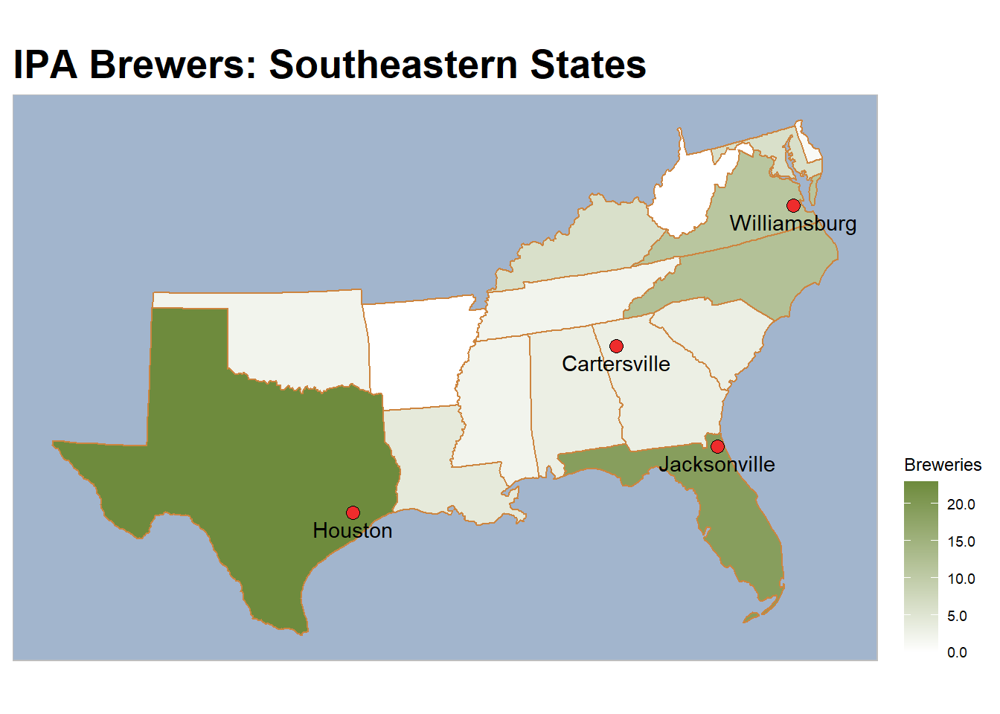
# Filter by beers in the southeastern US - Note that IPA dataset is used, but that this is a full beer dataset modified to include a binary column for IPA designation
SEBeerdf = IPA %>%
filter(grepl("FL",State)|
grepl("AL",State)|
grepl("GA",State)|
grepl("MS",State)|
grepl("SC",State)|
grepl("NC",State)|
grepl("TN",State)|
grepl("MD",State)|
grepl("VA",State)|
grepl("KY",State))
head(SEBeerdf)## Brew_ID Brewery City State Beer Beer_ID ABV IBU Style Ounces IPA_Count
## 1 2 Against the Grain Brewery Louisville KY Citra Ass Down 2686 0.080 68 American Double / Imperial IPA 16 1
## 2 2 Against the Grain Brewery Louisville KY London Balling 2685 0.125 80 English Barleywine 16 0
## 3 2 Against the Grain Brewery Louisville KY 35 K 2684 0.077 25 Milk / Sweet Stout 16 0
## 4 2 Against the Grain Brewery Louisville KY A Beer 2683 0.042 42 American Pale Ale (APA) 16 0
## 5 2 Against the Grain Brewery Louisville KY Rules are Rules 2682 0.050 25 German Pilsener 16 0
## 6 2 Against the Grain Brewery Louisville KY Flesh Gourd'n 2681 0.066 21 Pumpkin Ale 16 0#Facet Wrap by State for a comparison of ABV vs IBU in this region
SEBeerdf %>%
ggplot(aes(x = IBU, y = ABV, color = State)) +
geom_point() +
labs(title = "Bitterness vs. Alcohol Content",
x = "Bitterness",
y = "Alcohol Content") +
facet_wrap(~State)## Warning: Removed 93 rows containing missing values (geom_point).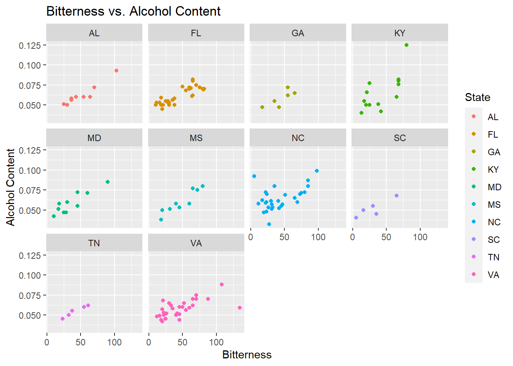
#Histogram shows us that the most popular ale styles are IPA and APA
SEBeerdf %>%
ggplot(aes(x = Style)) + geom_histogram(stat="count") + labs(title = "SE Region Count by Style", x = "Style", y = "Count") + theme(axis.text.x = element_text(angle = 90, vjust = 0.5, hjust=1))## Warning: Ignoring unknown parameters: binwidth, bins, pad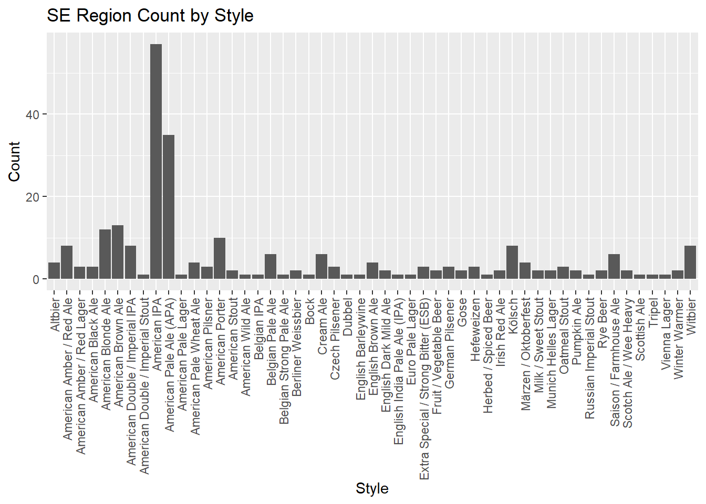
#Filter for American IPA
TestBeer <- c("American IPA")
SEMarket <- SEBeerdf %>%
filter(Style == TestBeer)
#We observed an outlier with high IBU and low ABV. Further investigation revealed that this IBU count may have been an error, since the brewery's website lists it as significantly lower. We removed this data point.
SEMarket = SEMarket %>%
filter(!grepl("Troopers Alley IPA",Beer))
head(SEMarket)## Brew_ID Brewery City State Beer Beer_ID ABV IBU Style Ounces IPA_Count
## 1 2 Against the Grain Brewery Louisville KY Pile of Face 2675 0.060 65 American IPA 16 1
## 2 6 COAST Brewing Company Charleston SC HopArt 2653 0.077 NA American IPA 16 1
## 3 50 SweetWater Brewing Company Atlanta GA SweetWater IPA 1710 0.064 NA American IPA 12 1
## 4 51 Flying Mouse Brewery Troutville VA Flying Mouse 4 2566 0.070 70 American IPA 12 1
## 5 63 Against The Grain Brewery Louisville KY Citra Ass Down 2540 0.082 68 American IPA 16 1
## 6 68 3 Daughters Brewing St Petersburg FL Bimini Twist 2519 0.070 82 American IPA 12 1#Dot Plot of ABV vs IBU
p = SEMarket %>%
ggplot(aes(x = IBU, y = ABV)) +
geom_point(size = 3,
fill = "dodgerblue4",
color = "dodgerblue4") +
labs(title = "IPA Bitterness vs. Alcohol Content in the South East Region (US)",
x = "Bitterness",
y = "Alcohol Content") +
geom_smooth(method = lm,
color = "darkgoldenrod1") +
theme(panel.grid.major = element_blank(),
panel.grid.minor = element_blank())
ggbackground(p, img)## `geom_smooth()` using formula 'y ~ x'## Warning: Removed 12 rows containing non-finite values (stat_smooth).## Warning: Removed 12 rows containing missing values (geom_point).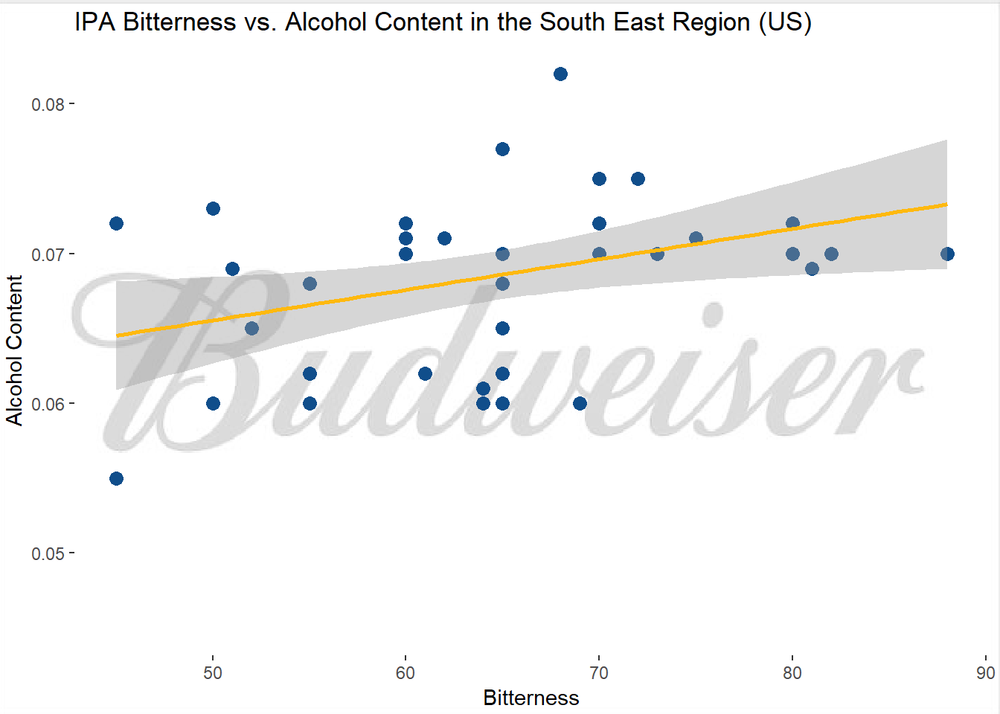
#Facet Wrap by State Dot Plot of ABV vs IBU
SEMarket %>%
ggplot(aes(x = IBU, y = ABV)) +
geom_point(fill = "dodgerblue4",
color = "dodgerblue4") +
labs(title = "IPA Bitterness vs. Alcohol Content in the South East Region (US)",
x = "Bitterness",
y = "Alcohol Content") +
facet_wrap(~State)## Warning: Removed 12 rows containing missing values (geom_point).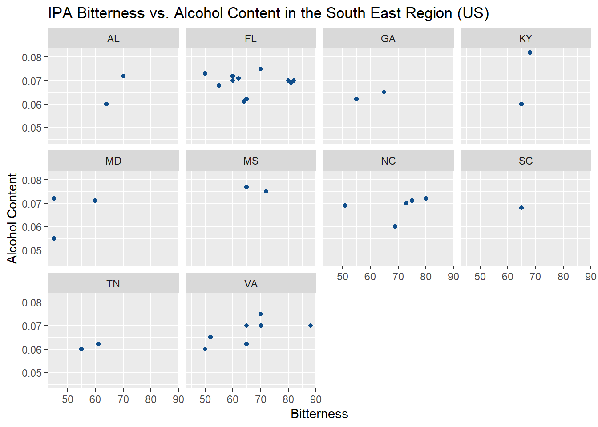
#Median IBU for the SE Region
SEMarket %>%
filter(!is.na(IBU)) %>%
summarise_at(vars(IBU), list(Median_IBU = median))## Median_IBU
## 1 65#Median IBU for the SE Region by State
SEMarket %>%
filter(!is.na(IBU)) %>%
group_by(State) %>%
summarise_at(vars(IBU), list(Median_IBU = median))## # A tibble: 10 x 2
## State Median_IBU
## <chr> <dbl>
## 1 AL 67
## 2 FL 62
## 3 GA 60
## 4 KY 66.5
## 5 MD 45
## 6 MS 68.5
## 7 NC 73
## 8 SC 65
## 9 TN 58
## 10 VA 65#Median ABV for the SE Region
SEMarket %>%
filter(!is.na(ABV)) %>%
summarise_at(vars(ABV), list(Median_ABV = median))## Median_ABV
## 1 0.07#Median ABV for the SE Region by State
SEMarket %>%
filter(!is.na(ABV)) %>%
group_by(State) %>%
summarise_at(vars(ABV), list(Median_ABV = median))## # A tibble: 10 x 2
## State Median_ABV
## <chr> <dbl>
## 1 AL 0.066
## 2 FL 0.07
## 3 GA 0.064
## 4 KY 0.065
## 5 MD 0.07
## 6 MS 0.076
## 7 NC 0.067
## 8 SC 0.0725
## 9 TN 0.061
## 10 VA 0.07Given the datasets Beers.csv and Breweries.csv we were tasked to analyze several aspects of the data.
Our first task was to determine a brewery count by State. We have demonstrated this with a summary of the data as a histogram for a visual reference. We found that there were large numbers of breweries in the western region of the United States and that the top ten states with the highest brewery counts accounted for over 50% of total breweries.
A deeper analysis required that the two datasets provided be merged. The Brewery_ID column from the beers.csv dataset provided the best option to complete this.
After merging the datasets, missing or NA values were removed to effectively study any relationships between the data points. We noted that in doing so, the highest ABV value was removed from our analysis.
Working with the merged and complete values dataset, we computed the median ABV and IBU for each state and presented the results in a bar graph.
It was found that Oregon’s Astoria Brewing Company out of Astoria has the Bitter Bitch Imperial IPA with 138 IBUs and that Kentucky’s Against the Grain Brewery out of Louisville has the London Balling English Barleywine with an ABV of 12.5%.
We then showed summary statistics of the ABV values. There was a slight right skew to the values but Budweiser’s ABV proved close to the median.
Showing a scatterplot of ABV vs IBU provided strong evidence of a linear relationship. We fit a linear regression line to emphasize our findings.
Basing further discovery on the linear relationship, an optimized KNN model was created to classify IPAs vs other Ales in the dataset. The model favored IPAs as the higher ABV and IBU beer. This relationship is crucial when considering the explosive popularity of IPAs in recent years.
Outside exploration demonstrated massive potential for an IPA market in the southeast region of the United States. Consumption of alcoholic beverages is relatively high in Georgia and a regional exploration of breweries proved little IPA options, especially when disregarding Florida. With these considerations, it is highly recommended that Budweiser utilize existing resources in the region to test an IPA; an extremely desirable beer in a region that is relatively untapped.